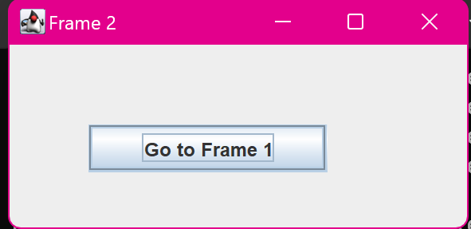

9. Java Program to Create and Switch between Frames using Buttons
import javax.swing.JFrame;
import javax.swing.JButton;
import java.awt.event.ActionListener;
import java.awt.event.ActionEvent;
class main {
public static void main(String[] args) {
// First Frame
JFrame frame1 = new JFrame("Frame 1");
JButton button1 = new JButton("Go to Frame 2");
button1.setBounds(50, 50, 150, 30);
button1.addActionListener(new ActionListener() {
public void actionPerformed(ActionEvent e) {
frame1.setVisible(false); // Hide Frame 1
createFrame2(); // Create and show Frame 2
}
});
frame1.setLayout(null);
frame1.setSize(300, 150);
frame1.add(button1);
frame1.setDefaultCloseOperation(JFrame.EXIT_ON_CLOSE);
frame1.setVisible(true);
System.out.println("Program is ready to switch between frames.");
}
// Method to create and display Frame 2
public static void createFrame2() {
JFrame frame2 = new JFrame("Frame 2");
JButton button2 = new JButton("Go to Frame 1");
button2.setBounds(50, 50, 150, 30);
button2.addActionListener(new ActionListener() {
public void actionPerformed(ActionEvent e) {
frame2.setVisible(false); // Hide Frame 2
createFrame1(); // Create and show Frame 1
}
});
frame2.setLayout(null);
frame2.setSize(300, 150);
frame2.add(button2);
frame2.setDefaultCloseOperation(JFrame.EXIT_ON_CLOSE);
frame2.setVisible(true);
}
// Method to create and display Frame 1 again
public static void createFrame1() {
JFrame frame1 = new JFrame("Frame 1");
JButton button1 = new JButton("Go to Frame 2");
button1.setBounds(50, 50, 150, 30);
button1.addActionListener(new ActionListener() {
public void actionPerformed(ActionEvent e) {
frame1.setVisible(false); // Hide Frame 1
createFrame2(); // Create and show Frame 2
}
});
frame1.setLayout(null);
frame1.setSize(300, 150);
frame1.add(button1);
frame1.setDefaultCloseOperation(JFrame.EXIT_ON_CLOSE);
frame1.setVisible(true);
}
}
